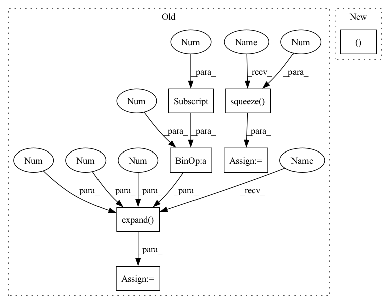

Pattern ID :25201
Before Change
predictions, lens = predictions
ids, phns, phn_lens = targets
if stage != "train":
pout = predictions .squeeze(2 )
predictions = predictions .expand(-1 , -1 , phns.shape[1] + 1 , -1 )
loss = params.compute_cost(
predictions,
phns.to(params.device).long(),After Change
stats = {}
if stage != "train":
seq, loss = predictions
phns = undo_padding(phns, phn_lens)
stats["PER"] = wer_details_for_batch(ids, phns, seq)
else:In pattern: SUPERPATTERN
Frequency: 3
Non-data size: 7
Instances Fragment ID: 77113816
Project Name: speechbrain/speechbrain
Commit Name: aa16de54e9444749c1b8a3181da1c343656483f2
Time: 2020-09-15
Author: a.heba@irit.fr
File Name: recipes/minimal_examples/neural_networks/ASR_Transducer/example_asr_transducer_experiment.py
M Class Name: TransducerBrain
N Class Name: TransducerBrain
M Method Name: compute_objectives(4)
N Method Name: compute_objectives(4)
M Parent Class: sb.core.Brain
N Parent Class: sb.core.Brain
M File Name: recipes/minimal_examples/neural_networks/ASR_Transducer/example_asr_transducer_experiment.py
N File Name: recipes/minimal_examples/neural_networks/ASR_Transducer/example_asr_transducer_experiment.py
M Start Line: 69
M End Line: 84
N Start Line: 72
N End Line: 83
Before Change
// if not train, the predictions will be a tensor of [B, T, 1, char_dim]
// So expand the 3rd dimension to compute the loss on the valid set
// the expected new tensor will have a dimension of [B, T, U, char_dim]
pout = predictions.squeeze(2 )
predictions = predictions.expand(-1 , -1 , bpe.shape[1] + 1 , -1 )
else:
index2lab = params.train_loader.label_dict["wrd"]["index2lab"]
bpe, bpe_lens = params.bpe_tokenizer(
words, word_lens, index2lab, task="encode"After Change
stats = {}
if stage != "train":
sequence_BPE, loss = predictions
word_seq = params.bpe_tokenizer(
sequence_BPE, task="decode_from_list"
) Fragment ID: 77113817
Project Name: speechbrain/speechbrain
Commit Name: de052ad9687a99b1a3bc0907b8f717a91058cd70
Time: 2020-09-15
Author: a.heba@irit.fr
File Name: recipes/LibriSpeech/ASR_Transducer/experiment_BPE.py
M Class Name: ASR
N Class Name: ASR
M Method Name: compute_objectives(4)
N Method Name: compute_objectives(4)
M Parent Class: sb.core.Brain
N Parent Class: sb.core.Brain
M File Name: recipes/LibriSpeech/ASR_Transducer/experiment_BPE.py
N File Name: recipes/LibriSpeech/ASR_Transducer/experiment_BPE.py
M Start Line: 105
M End Line: 141
N Start Line: 135
N End Line: 153
Before Change
predictions, lens = predictions
ids, phns, phn_lens = targets
if stage != "train":
pout = predictions.squeeze(2 )
predictions = predictions.expand(-1 , -1 , phns.shape[1] + 1 , -1 )
loss = params.compute_cost(
predictions,
phns.to(params.device).long(),After Change
stats = {}
if stage != "train":
seq, loss = predictions
phns = undo_padding(phns, phn_lens)
stats["PER"] = wer_details_for_batch(ids, phns, seq)
else: Fragment ID: 77113818
Project Name: speechbrain/speechbrain
Commit Name: aa16de54e9444749c1b8a3181da1c343656483f2
Time: 2020-09-15
Author: a.heba@irit.fr
File Name: recipes/minimal_examples/neural_networks/ASR_Transducer/example_asr_transducer_experiment.py
M Class Name: TransducerBrain
N Class Name: TransducerBrain
M Method Name: compute_objectives(4)
N Method Name: compute_objectives(4)
M Parent Class: sb.core.Brain
N Parent Class: sb.core.Brain
M File Name: recipes/minimal_examples/neural_networks/ASR_Transducer/example_asr_transducer_experiment.py
N File Name: recipes/minimal_examples/neural_networks/ASR_Transducer/example_asr_transducer_experiment.py
M Start Line: 69
M End Line: 84
N Start Line: 72
N End Line: 83
Before Change
phns = torch.cat([phns, phns], dim=0)
phn_lens = torch.cat([phn_lens, phn_lens], dim=0)
if stage != "train":
pout = predictions.squeeze(2 )
predictions = predictions.expand(-1 , -1 , phns.shape[1] + 1 , -1 )
loss = params.compute_cost(
predictions,
phns.to(params.device).long(),After Change
stats = {}
if stage != "train":
sequence, loss = predictions
ind2lab = params.train_loader.label_dict["phn"]["index2lab"]
sequence = convert_index_to_lab(sequence, ind2lab)
phns = undo_padding(phns, phn_lens) Fragment ID: 77113820
Project Name: speechbrain/speechbrain
Commit Name: a8c504b565174b073d63b7ca92143150d35b8849
Time: 2020-09-15
Author: a.heba@irit.fr
File Name: recipes/TIMIT/ASR_Transducer/experiment.py
M Class Name: ASR
N Class Name: ASR
M Method Name: compute_objectives(4)
N Method Name: compute_objectives(4)
M Parent Class: sb.core.Brain
N Parent Class: sb.core.Brain
M File Name: recipes/TIMIT/ASR_Transducer/experiment.py
N File Name: recipes/TIMIT/ASR_Transducer/experiment.py
M Start Line: 94
M End Line: 115
N Start Line: 97
N End Line: 118